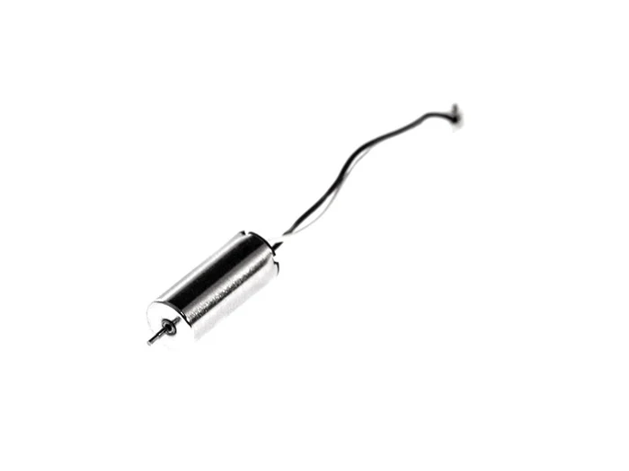
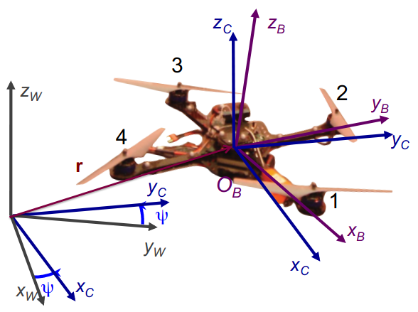
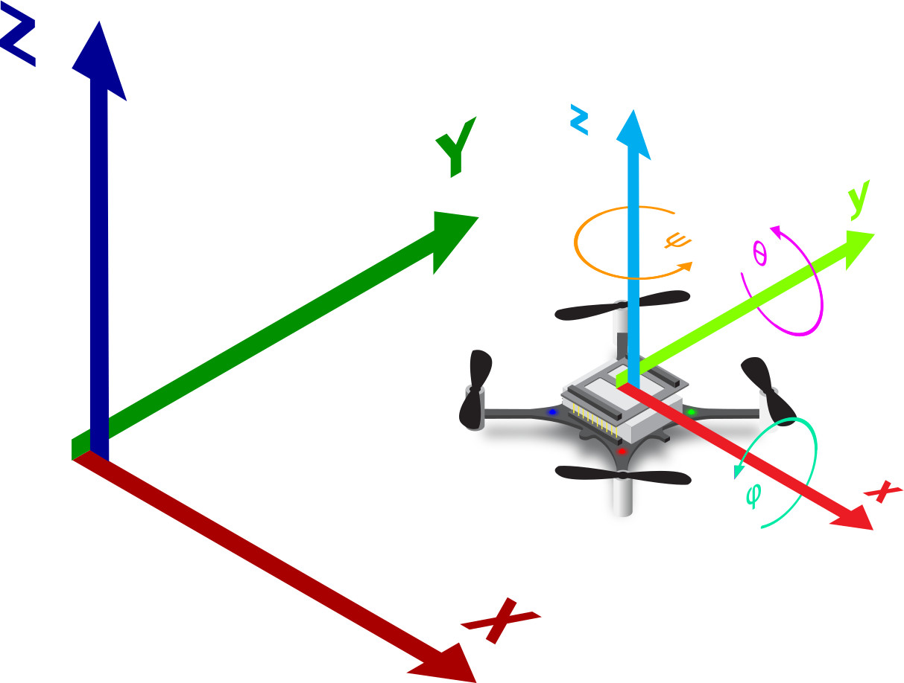
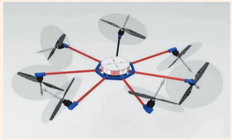

Multirotor Flight Dynamics
Wolfgang Hönig
October 25, 2024
Assignment 0: Build a 2D Multirotor Simulator
Did anyone attempt this?
Lets present/discuss results and challenges!
Brushed Motor

Brushless Motor
\[ \begin{align} F_i &= \kappa_F \omega_i^2\\ \tau_i &= \kappa_\tau \omega_i^2 \end{align} \]

\[ \begin{align} \boldsymbol{\eta} = \begin{bmatrix}f\\\tau_x\\\tau_y\\\tau_z\end{bmatrix} = \mathbf B_0 \begin{bmatrix}\omega_1^2\\\vdots\\\omega_K^2\end{bmatrix} \end{align} \]

\[ \begin{align} \boldsymbol{\eta} = \begin{bmatrix}f\\\tau_x\\\tau_y\\\tau_z\end{bmatrix} = \begin{bmatrix} \kappa_F & \kappa_F & \kappa_F & \kappa_F\\ 0 & \kappa_F l & 0 & -\kappa_F l\\ -\kappa_F l & 0 & \kappa_F l & 0\\ \kappa_\tau & -\kappa_\tau & \kappa_\tau & -\kappa_\tau \end{bmatrix} \begin{bmatrix} \omega_1^2\\ \omega_2^2\\ \omega_3^2\\ \omega_4^2 \end{bmatrix} \end{align} \]
(From the seminal paper (Mellinger and Kumar 2011))

\[ \begin{align} \boldsymbol{\eta} = \begin{bmatrix}f\\\tau_x\\\tau_y\\\tau_z\end{bmatrix} = \begin{bmatrix} \kappa_F & \kappa_F & \kappa_F & \kappa_F\\ -\kappa_F a & -\kappa_F a & \kappa_F a & \kappa_F a\\ -\kappa_F a & \kappa_F a & \kappa_F a & -\kappa_F a\\ -\kappa_\tau & \kappa_\tau & -\kappa_\tau & \kappa_\tau \end{bmatrix} \begin{bmatrix} \omega_1^2\\ \omega_2^2\\ \omega_3^2\\ \omega_4^2 \end{bmatrix} \end{align} \]
\[ \boldsymbol{\hat{\omega}} = \begin{bmatrix} 0 & -\omega_z & \omega_y\\ \omega_z & 0 & -\omega_x\\ -\omega_y & \omega_x & 0 \end{bmatrix} \]
These properties need to be enforced after integration!
Negation: \[ -\mathbf q = (-q_w, -q_x, -q_y, -q_z)^\top \]
Addition: \[ \mathbf q \oplus \mathbf p = (q_w + p_w, q_x + p_x, q_y + p_y, q_z + p_z)^\top \]
Multiplication: \[ \mathbf q \otimes \mathbf p = \begin{pmatrix} q_w p_w - q_x p_x - q_y p_y - q_z p_z\\ q_x p_w + q_w p_x - q_z p_y + q_y p_z\\ q_y p_w + q_z p_x + q_w p_y - q_x p_z\\ q_z p_w - q_y p_x + q_x p_y + q_w p_z \end{pmatrix} \]
Conjugate \[ \mathbf q^* = (q_w, -q_x, -q_y, -q_z)^\top \]
Norm: regular \(L_2\) norm on the vector \[ \| \mathbf q \| = \sqrt{q_w^2 + q_x^2 + q_y^2 + q_z^2} \]
With a rotation matrix \(\mathbf R\), we can rotate a vector \(\mathbf v\) as \[\mathbf v_{rotated} = \mathbf R \mathbf v\]
With quaternion \(\mathbf q\) \[ \overline{\mathbf v_{rotated}} = \mathbf q \odot \mathbf v = \mathbf q \otimes \overline{\mathbf v} \otimes \mathbf q^* \]
(I.e., augment \(\mathbf v\) to a quaternion, use two quaternion multiplications, and one conjugate, and then extract the vector part of the result)
Assuming \(\boldsymbol{\omega}\) in body frame (e.g., gyroscope): \[ \dot{\mathbf q} = \frac{1}{2} \mathbf q \otimes \overline{\boldsymbol{\omega}} \]
Assuming \(\boldsymbol{\omega}\) in world frame \[ \dot{\mathbf q} = \frac{1}{2} \overline{\boldsymbol{\omega}} \otimes \mathbf q \]
For integration, we can use Euler or RK4, but need to enforce \(\| \mathbf q \|_2 = 1\) afterwards.
\[ \mathbf q_{t+\Delta t} = \mathbf q_t \otimes \begin{pmatrix} \cos{(\| \boldsymbol{\omega} \| \Delta t/2)}\\ \frac{\boldsymbol{\omega}}{\| \boldsymbol{\omega} \|} \sin{(\|\boldsymbol{\omega}\| \Delta t/2)} \end{pmatrix} \]
More details and derivations at (Särkkä 2007; Jia 2024; Narayan 2017)
\[ \begin{align} &\dot{\mathbf{p}} = \mathbf{v}, && m\mathbf{\dot{v}} = m\mathbf{g} + \mathbf{q} \odot (0, 0, f)^\top,\\ &\dot{\mathbf q} = \frac{1}{2} \mathbf q \otimes \overline{\boldsymbol{\omega}}, && \mathbf{J}\dot{\boldsymbol{\omega}} = \mathbf{J}\boldsymbol{\omega}\times \boldsymbol{\omega} + \boldsymbol{\tau}_u, \end{align} \] where \[ \begin{align} \begin{bmatrix}f\\\boldsymbol{\tau}_u\end{bmatrix} = \mathbf B_0 \begin{bmatrix}\omega_1^2\\\vdots\\\omega_K^2\end{bmatrix} \end{align} \]
All important values were identified in a BS thesis (Förster 2015).
\[ m\mathbf{\dot{v}} = m\mathbf{g} + \mathbf{q} \odot (0, 0, f)^\top + \mathbf{f}_a(\mathbf p, t) \]
How many controllable degrees-of-freedom does a Quadrotor (like the Crazyflie) have?

Examples: (Bauersfeld et al. 2021; Shi et al. 2022; Smith et al. 2023)
To understand how a robot works \(\Rightarrow\) build your own, like in this class.
For practical use-cases: use one of the existing ones (guidelines: see survey paper).
The goal of this assignment is to build a dynamics simulator for the Bitcraze Crazyflie 2.1 robot. This simulator will be extended in the upcoming assignments to test controls, state estimation, and motion planning.
Compare (runtime/step size/solution quality) of two different integration schemes you have learned. Options:
Given: state and action sequence of a sample flight.
Goal: Verify that the dynamics are correct.
Integrating over the whole trajectory does not work, as small numerical differences can lead to largely different results.
Integrate over \(k=1...10\) time-steps, and compare the simulated states and real states instead.
use std::ops::Add;
#[derive(Debug, Copy, Clone)]
struct Vec3 {
x: f32,
y: f32,
z: f32,
}
impl Add for Vec3 {
type Output = Self;
fn add(self, other: Self) -> Self {
Self {
x: self.x + other.x,
y: self.y + other.y,
z: self.z + other.z,
}
}
}
fn main() {
let a = Vec3 {x: 0.0, y: 1.0, z: 2.0};
let b = Vec3 {x: 3.0, y: 4.0, z: 5.0};
let c = a + b;
println!("{:?}", c);
}Next Week
Discussion session: bring your code and any questions!
Official Registration
On MOSES until Nov 1st (midnight).
?